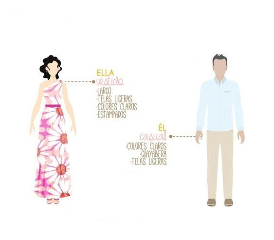

Cómo Llegar
Para llegar a Margarita se debe coger un vuelo desde Caracas.
Las aerolíneas que vuelan a Margarita (el nombre del aeropuerto es Porlamar) son:
Nota importante: Las aerolíneas en Venezuela sacan vuelos con menos antelación que en Europa. Es normal que faltando tantos meses para la boda no se vean resultados en las páginas.
Agencias
-
TitoTur:
- Whatsapp: +58 414 3626882
- Instagram: @titoturca
-
Viajes Mazzocchi:
- Whatsapp: +58 414 8484993
- Instagram: @viajes.mazzocchi
Fiesta de bienvenida
TBD
La Boda
La boda se celebrará en el Santuario del Santísimo Cristo del Buen Viaje el 17 de agosto de 2024 a las 4:00 pm.
Traslados
Habrá salida de autobuses desde el Hotel Tibisay hasta la iglesia.
Recepción
La celebración será en el Downtown Beach Club del hotel Tibisay Boutique tras la ceremonia.
Dress code
Alojamiento en Margarita
La celebración de la boda será en el Hotel Tibisay de Margarita. Por eso recomendamos alojarse en este hotel, donde contamos con un descuento especial.
Reservas
Whatsapp +58 414 188 2167
Código de descuento: Boda Verónica y Pablo
¿Qué hacer en Venezuela?
Algunos de los destinos más interesantes a los que viajar en Venezuela, además de Margarita, son:
- Los Roques
- Canaima
- Caracas
Para viajes a Los Roques o Canaima, pueden contactar con las agencias de viajes mencionadas anteriormente
Contacto
Para cualquier cuestión relacionada con el viaje, pueden contactar con nuestra wedding planner.
Caro Odreman: +58 414 7939162